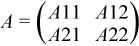

Intel® oneAPI Math Kernel Library Developer Reference - Fortran
Computes Cholesky factorization using a recursive algorithm.
call spotrf2(uplo, n, a, lda, info)
call dpotrf2(uplo, n, a, lda, info)
call cpotrf2(uplo, n, a, lda, info)
call zpotrf2(uplo, n, a, lda, info)
?potrf2 computes the Cholesky factorization of a real or complex symmetric positive definite matrix A using the recursive algorithm.
The factorization has the form
for real flavors:
A = UT * U, if uplo = 'U', or
A = L * LT, if uplo = 'L',
for complex flavors:
A = UH * U, if uplo = 'U',
or A = L * LH, if uplo = 'L',
where U is an upper triangular matrix and L is lower triangular.
This is the recursive version of the algorithm. It divides the matrix into four submatrices:

where A11 is n1 by n1 and A22 is n2 by n2, with n1 = n/2 and n2 = n-n1.
The subroutine calls itself to factor A11. Update and scale A21 or A12, update A22 then call itself to factor A22.
CHARACTER*1. = 'U': Upper triangle of A is stored;
= 'L': Lower triangle of A is stored.
INTEGER. The order of the matrix A.
n≥ 0.
REAL for spotrf2
DOUBLE PRECISION for dpotrf2
COMPLEX for cpotrf2
DOUBLE COMPLEX for zpotrf2
Array, size (lda, n).
On entry, the symmetric matrix A.
If uplo = 'U', the leading n-by-n upper triangular part of a contains the upper triangular part of the matrix A, and the strictly lower triangular part of a is not referenced.
If uplo = 'L', the leading n-by-n lower triangular part of a contains the lower triangular part of the matrix A, and the strictly upper triangular part of a is not referenced.
INTEGER. The leading dimension of the array a.
lda≥ max(1,n).
a |
On exit, if info = 0, the factor U or L from the Cholesky factorization. For real flavors: A = UT*U or A = L*LT; For complex flavors: A = UH*U or A = L*LH. |
info |
INTEGER. = 0: successful exit < 0: if info = -i, the i-th argument had an illegal value > 0: if info = i, the leading minor of order i is not positive definite, and the factorization could not be completed. |